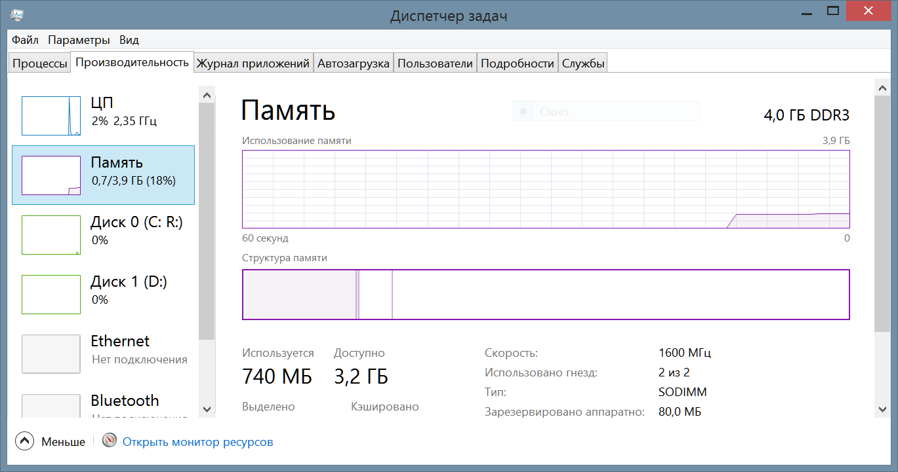
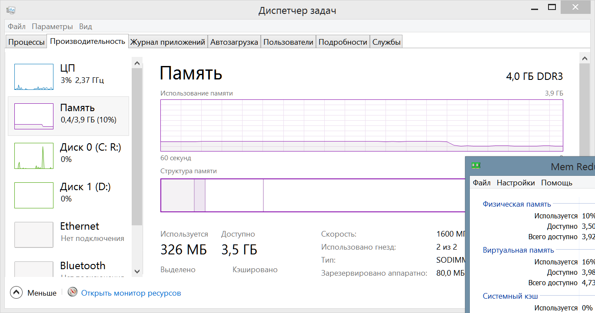
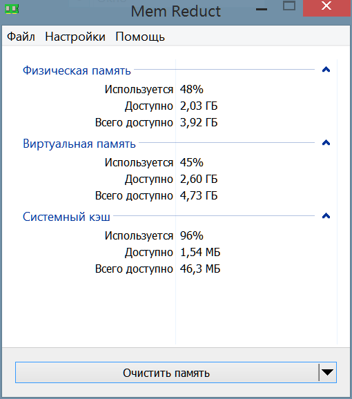

Увеличиваем количество свободной оперативной памяти при помощи программы MemReduct
Для планшета на Windows очень важно иметь как можно больше свободной оперативной памяти. Почему? Потому что встроенная в процессор видеокарта использует оперативную память в качестве своей видеопамяти. Предположим у вашего планшета есть 2 ГБ оперативной памяти. Вы смотрите на системные требования игры и видите что для её работы требуется 2 ГБ оперативной памяти. Нв самом деле это не означает, что требования по оперативной памяти были соблюдены. Любой игре для работы требуется видеопамять. Ну, пусть игра в нашем примере будет нуждаться в 1 ГБ видеопамяти. Она попросту возьмёт эту память из оперативной памяти планшета. При помощи несложных математических вычислений понимаем что у нас остаётся 1 ГБ оперативной памяти и этого уже не хватает, игра начнёт записывать свои данные в файл подкачки, а это автоматически означает только одно - фризы и малое количество кадров в секунду. Сначала вы будете думать что в подвисаниях виновата карта памяти, однако карты с типичным классом скорости 10 достаточно для старых игр и на самом деле виновато малое количество оперативной памяти и подгрузки из файла подкачка. И не стоит забывать, что в бюджетных планшетах в качестве накопителя установлена память eMMC типа, которая хоть и быстрее карт памяти десятого класса, но для файла подкачки она крайне медлительная. Чтобы увеличить количество доступной оперативной памяти нам понадобится программа MemReduct.
Скачать программу с официального сайта
Смотрите, вот столько оперативной памяти свободно после запуска Windows 8.1:
А вот столько свободно с программой MemReduct:
Не могу сказать что за магию использовал разработчик программы, но результат весьма приятный. А теперь представьте какую-нибудь Windows 10, которая потребляет 1.5 ГБ оперативной памяти, а после запуска MemReduct кушает не более 800 МБ. Для планшета, у которого всего 2 ГБ оперативной памяти, это очень весомый плюс.
Программа весьма проста в использовании. Вы просто нажимаете кнопку "Очистить память" и освобождаете оперативную память. В настройках можно включить автозапуск программы вместе с операционной системой, а также автоматическую очистку, когда уровень заполненности оперативной памяти перейдёт определённый порог в процентах, который вы сами и укажете. Но не советую автоматически очищать память во время игры. Да, в теории это кажется чем-то крайне полезным, однако в реальности игра будет лагать, если оперативная память будет постоянно чиститься в фоне. Да и кто знает, возможно в некоторых играх это вызовет фатальные ошибки и игра зависнет или будет работать неправильно. Советую просто очистить оперативную память перед запуском игры, этого будет и так достаточно.